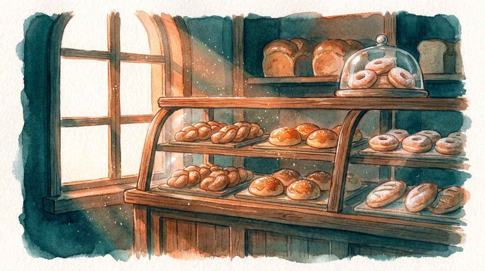
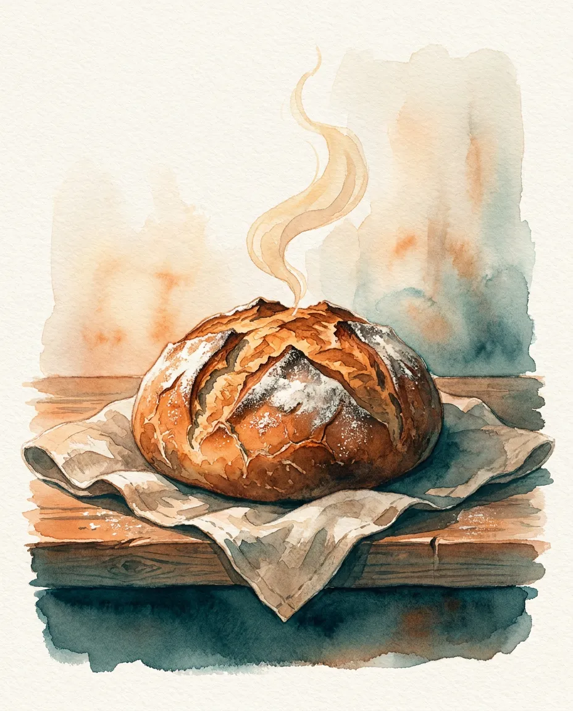
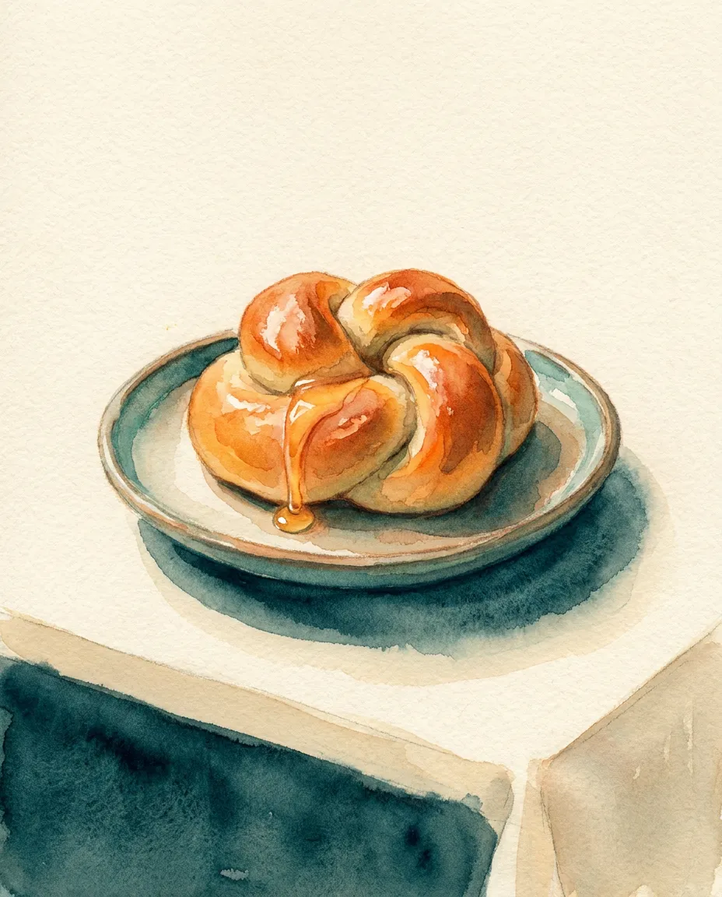
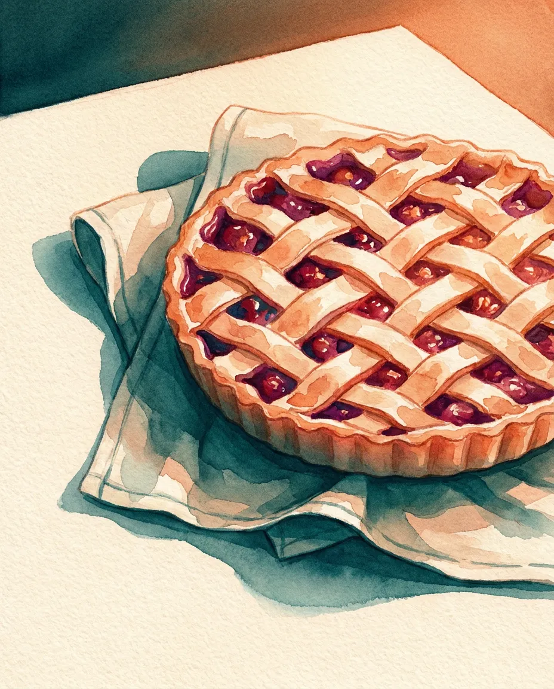
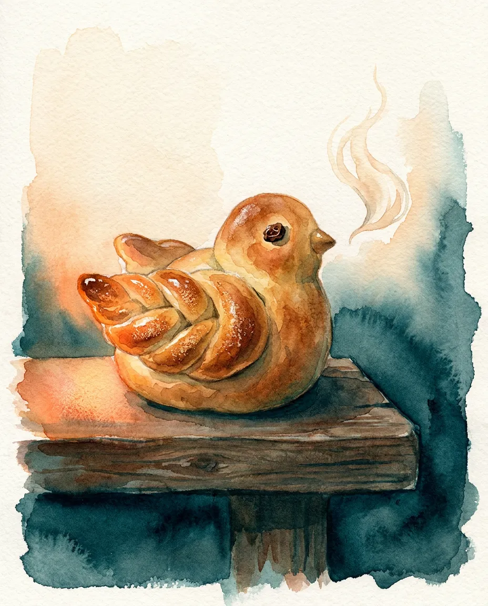

The Doughnut.
Lighter than it should be. Oskar’s first wonder, still rising.

LITTLE WONDERS, BAKED NIGHTLY
Portraits from our counter.
Lighter than it should be. Oskar’s first wonder, still rising.
Baked in Elias’s stone oven. A crust like the hills it came from.



